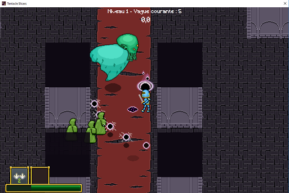
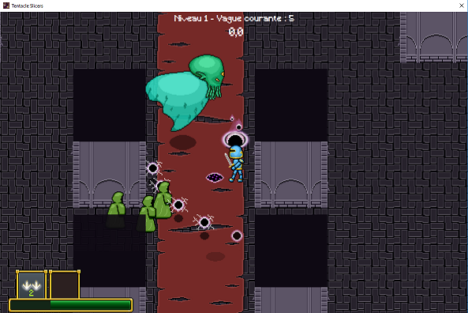
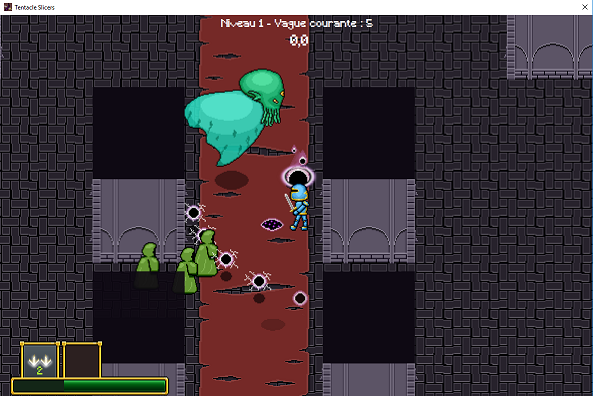
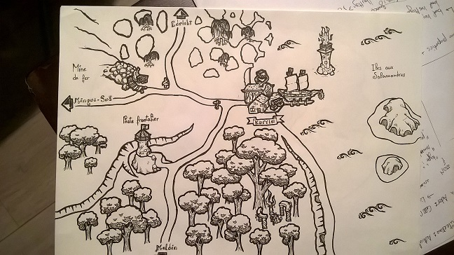
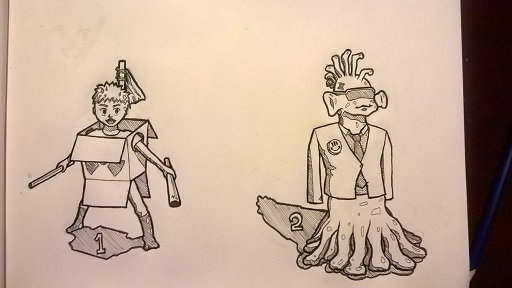

Menu principal et scène de combat de Tentacle Slicers
 

Voitures et scènes de Car Crash Boom !!! Yeah !


Scène de T-Arena et zones de déplacement et d'attaque


Il y a un an, j'ai développé Tentacle Slicers en binôme, un jeu codé en C# sans moteur intégré : j'ai donc notemment créé l'architecture du moteur, les collisions (formes 2d simples et lignes de vue), le système d'animations, l'analyseur de fichier pour créer des niveaux, l'intelligence articifielle (avec pathfinding) et tous les assets graphiques du jeu (images, animations, effets, terrains).
Il s'agit d'un jeu jouable tout seul ou à deux (sur un même clavier) où il faut résister à des vagues d'ennemis. Des powerups permettent d'améliorer les statistiques des héros des joueurs et de développer de nouvelles compétences : projectiles puissants, en mouvement, invincibilité, sorts de contrôle, ...
Voici le code source du jeu (environ 8000 lignes de code). GitHub n'a pas été utilisé pour son développement et ne sert ici qu'à héberger le projet final. Un Youtuber a accepté de tester notre jeu :)
Peu de temps après mon arrivée à l'UQAC (en collocation), j'ai participé à une Game Jam au développement de T-Arena. Il s'agit d'un jeu en 2D où deux joueurs s'affrontent au tout par jour sur un terrain découpé en cases. Je me suis occupé des inputs, de l'algorithme de sélection de case (avec le joystick ou au clavier) et j'ai créé la boucle de jeu principale.
Dans le cours de conception de jeu vidéo, je participe au développement de 'Car Crash Boom ! Yeah !!!', un jeu de course en multijoueur local où deux équipes de deux joueurs s'affrontent (un pilote et un copilote). J'ai notamment développé un système d'inputs générique, créé une carte jouable (sur une plage), et tente maintenant de créer un système pour charger les différents circuits dynamiquement (et transporter les joueurs de l'un à l'autre).
J'aborde également le jeu vidéo sous plusiuers aspects dans mes autres cours : en intelligence artificielle pour le jeu vidéo, j'ai intégré un réseau de neurones à des IA sur Raven, un jeu de tir en vue de dessus. En programmation objet avancée, j'ai découvert le Javascript et tenté (en binôme) de créer un éditeur de niveau, qui produit un fichier JSON interprétable par un moteur de jeu en ligne. Enfin, en forage de données, j'ai étudié (en trio) l'aglorithme NEAT pour créer un réseau de neurones qui apprend seul à jouer à Super Mario Bros™ sur SNES (depuis un émulateur).
Je suis Alsacien. J'y ai fais une classe préparatoire scientifique puis j'ai été admis à Polytech Marseille pour une formation d'ingénieur informaticien. J'ai pris goût aux différents problèmes d'architecture et de performance que je retrouve dans les moteurs de jeu vidéo, et je me suis intéressé aux différents aspects artistiques impliqués dans la réalisation de jeu vidéo.
Actuellement, je cherche à développer mes capacités en programmation (surtout en C++ moderne) et ma connaissance des moteurs de jeu. Je continue à me former aux autres aspects du jeu vidéo : je lis des ouvrages portant sur le game design, je dessine dans l'optique de développer une meileure affinité artistique, et je tente occasionnellement d'écrire pour développer des univers et des personnages profonds.
Voici mon ancien site (plus maintenu depuis 2 ans), ma page LinkedIn et ma page GitHub. Celle-ci comprend notamment un répertoire où j'expérimente des thématiques en C++ moderne (dont le multi-threading et les templates).
Menu principal et scène de combat de Tentacle Slicers

Voitures et scènes de Car Crash Boom !!! Yeah !
Scène de T-Arena et zones de déplacement et d'attaque
Quelques dessins :)
 